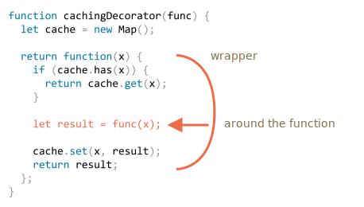

JavaScript 在处理函数时提供了非凡的灵活性。它们可以被传递，用作对象，现在我们将看到如何在它们之间 转发（forward） 调用并 装饰（decorate） 它们。
假设我们有一个 CPU 重负载的函数 slow(x)，但它的结果是稳定的。换句话说，对于相同的 x，它总是返回相同的结果。
如果经常调用该函数，我们可能希望将结果缓存（记住）下来，以避免在重新计算上花费额外的时间。
但是我们不是将这个功能添加到 slow() 中，而是创建一个包装器（wrapper）函数，该函数增加了缓存功能。正如我们将要看到的，这样做有很多好处。
下面是代码和解释：
function slow(x) {
// 这里可能会有重负载的 CPU 密集型工作
alert(`Called with ${x}`);
return x;
}
function cachingDecorator(func) {
let cache = new Map();
return function(x) {
if (cache.has(x)) { // 如果缓存中有对应的结果
return cache.get(x); // 从缓存中读取结果
}
let result = func(x); // 否则就调用 func
cache.set(x, result); // 然后将结果缓存（记住）下来
return result;
};
}
slow = cachingDecorator(slow);
alert( slow(1) ); // slow(1) 被缓存下来了
alert( "Again: " + slow(1) ); // 一样的
alert( slow(2) ); // slow(2) 被缓存下来了
alert( "Again: " + slow(2) ); // 和前面一行结果相同在上面的代码中，cachingDecorator 是一个 装饰者（decorator）：一个特殊的函数，它接受另一个函数并改变它的行为。
其思想是，我们可以为任何函数调用 cachingDecorator，它将返回缓存包装器。这很棒啊，因为我们有很多函数可以使用这样的特性，而我们需要做的就是将 cachingDecorator 应用于它们。
通过将缓存与主函数代码分开，我们还可以使主函数代码变得更简单。
cachingDecorator(func) 的结果是一个“包装器”：function(x) 将 func(x) 的调用“包装”到缓存逻辑中：

从外部代码来看，包装的 slow 函数执行的仍然是与之前相同的操作。它只是在其行为上添加了缓存功能。
总而言之，使用分离的 cachingDecorator 而不是改变 slow 本身的代码有几个好处：
cachingDecorator 是可重用的。我们可以将它应用于另一个函数。slow 本身的复杂性（如果有的话）。上面提到的缓存装饰者不适用于对象方法。
例如，在下面的代码中，worker.slow() 在装饰后停止工作：
// 我们将对 worker.slow 的结果进行缓存
let worker = {
someMethod() {
return 1;
},
slow(x) {
// 可怕的 CPU 过载任务
alert("Called with " + x);
return x * this.someMethod(); // (*)
}
};
// 和之前例子中的代码相同
function cachingDecorator(func) {
let cache = new Map();
return function(x) {
if (cache.has(x)) {
return cache.get(x);
}
let result = func(x); // (**)
cache.set(x, result);
return result;
};
}
alert( worker.slow(1) ); // 原始方法有效
worker.slow = cachingDecorator(worker.slow); // 现在对其进行缓存
alert( worker.slow(2) ); // 蛤！Error: Cannot read property 'someMethod' of undefined
错误发生在试图访问 this.someMethod 并失败了的 (*) 行中。你能看出来为什么吗？
原因是包装器将原始函数调用为 (**) 行中的 func(x)。并且，当这样调用时，函数将得到 this = undefined。
如果尝试运行下面这段代码，我们会观察到类似的问题：
let func = worker.slow;
func(2);因此，包装器将调用传递给原始方法，但没有上下文 this。因此，发生了错误。
让我们来解决这个问题。
有一个特殊的内置函数方法 func.call(context, ...args)，它允许调用一个显式设置 this 的函数。
语法如下：
func.call(context, arg1, arg2, ...)它运行 func，提供的第一个参数作为 this，后面的作为参数（arguments）。
简单地说，这两个调用几乎相同：
func(1, 2, 3);
func.call(obj, 1, 2, 3)它们调用的都是 func，参数是 1、2 和 3。唯一的区别是 func.call 还会将 this 设置为 obj。
例如，在下面的代码中，我们在不同对象的上下文中调用 sayHi：sayHi.call(user) 运行 sayHi 并提供了 this=user，然后下一行设置 this=admin：
function sayHi() {
alert(this.name);
}
let user = { name: "John" };
let admin = { name: "Admin" };
// 使用 call 将不同的对象传递为 "this"
sayHi.call( user ); // John
sayHi.call( admin ); // Admin在这里我们用带有给定上下文和 phrase 的 call 调用 say：
function say(phrase) {
alert(this.name + ': ' + phrase);
}
let user = { name: "John" };
// user 成为 this，"Hello" 成为第一个参数
say.call( user, "Hello" ); // John: Hello在我们的例子中，我们可以在包装器中使用 call 将上下文传递给原始函数：
let worker = {
someMethod() {
return 1;
},
slow(x) {
alert("Called with " + x);
return x * this.someMethod(); // (*)
}
};
function cachingDecorator(func) {
let cache = new Map();
return function(x) {
if (cache.has(x)) {
return cache.get(x);
}
let result = func.call(this, x); // 现在 "this" 被正确地传递了
cache.set(x, result);
return result;
};
}
worker.slow = cachingDecorator(worker.slow); // 现在对其进行缓存
alert( worker.slow(2) ); // 工作正常
alert( worker.slow(2) ); // 工作正常，没有调用原始函数（使用的缓存）现在一切都正常工作了。
为了让大家理解地更清晰一些，让我们更深入地看看 this 是如何被传递的：
worker.slow 现在是包装器 function (x) { ... }。worker.slow(2) 执行时，包装器将 2 作为参数，并且 this=worker（它是点符号 . 之前的对象）。func.call(this, x) 将当前的 this（=worker）和当前的参数（=2）传递给原始方法。现在让我们把 cachingDecorator 写得更加通用。到现在为止，它只能用于单参数函数。
现在如何缓存多参数 worker.slow 方法呢？
let worker = {
slow(min, max) {
return min + max; // scary CPU-hogger is assumed
}
};
// 应该记住相同参数的调用
worker.slow = cachingDecorator(worker.slow);之前，对于单个参数 x，我们可以只使用 cache.set(x, result) 来保存结果，并使用 cache.get(x) 来检索并获取结果。但是现在，我们需要记住 参数组合 (min,max) 的结果。原生的 Map 仅将单个值作为键（key）。
这儿有许多解决方案可以实现：
cache.set(min) 将是一个存储（键值）对 (max, result) 的 Map。所以我们可以使用 cache.get(min).get(max) 来获取 result。对于许多实际应用，第三种方式就足够了，所以我们就用这个吧。
当然，我们需要传入的不仅是 x，还需要传入 func.call 的所有参数。让我们回想一下，在 function() 中我们可以得到一个包含所有参数的伪数组（pseudo-array）arguments，那么 func.call(this, x) 应该被替换为 func.call(this, ...arguments)。
这是一个更强大的 cachingDecorator：
let worker = {
slow(min, max) {
alert(`Called with ${min},${max}`);
return min + max;
}
};
function cachingDecorator(func, hash) {
let cache = new Map();
return function() {
let key = hash(arguments); // (*)
if (cache.has(key)) {
return cache.get(key);
}
let result = func.call(this, ...arguments); // (**)
cache.set(key, result);
return result;
};
}
function hash(args) {
return args[0] + ',' + args[1];
}
worker.slow = cachingDecorator(worker.slow, hash);
alert( worker.slow(3, 5) ); // works
alert( "Again " + worker.slow(3, 5) ); // same (cached)现在这个包装器可以处理任意数量的参数了（尽管哈希函数还需要被进行调整以允许任意数量的参数。一种有趣的处理方法将在下面讲到）。
这里有两个变化：
(*) 行中它调用 hash 来从 arguments 创建一个单独的键。这里我们使用一个简单的“连接”函数，将参数 (3, 5) 转换为键 "3,5"。更复杂的情况可能需要其他哈希函数。(**) 行使用 func.call(this, ...arguments) 将包装器获得的上下文和所有参数（不仅仅是第一个参数）传递给原始函数。我们可以使用 func.apply(this, arguments) 代替 func.call(this, ...arguments)。
内建方法 func.apply 的语法是：
func.apply(context, args)它运行 func 设置 this=context，并使用类数组对象 args 作为参数列表（arguments）。
call 和 apply 之间唯一的语法区别是，call 期望一个参数列表，而 apply 期望一个包含这些参数的类数组对象。
因此，这两个调用几乎是等效的：
func.call(context, ...args); // 使用 spread 语法将数组作为列表传递
func.apply(context, args); // 与使用 call 相同这里只有很小的区别：
... 允许将 可迭代对象 args 作为列表传递给 call。apply 仅接受 类数组对象 args。因此，当我们期望可迭代对象时，使用 call，当我们期望类数组对象时，使用 apply。
对于即可迭代又是类数组的对象，例如一个真正的数组，我们使用 call 或 apply 均可，但是 apply 可能会更快，因为大多数 JavaScript 引擎在内部对其进行了优化。
将所有参数连同上下文一起传递给另一个函数被称为“呼叫转移（call forwarding）”。
这是它的最简形式：
let wrapper = function() {
return func.apply(this, arguments);
};当外部代码调用这种包装器 wrapper 时，它与原始函数 func 的调用是无法区分的。
现在，让我们对哈希函数再做一个较小的改进：
function hash(args) {
return args[0] + ',' + args[1];
}截至目前，它仅适用于两个参数。如果它可以适用于任何数量的 args 就更好了。
自然的解决方案是使用 arr.join 方法：
function hash(args) {
return args.join();
}……不幸的是，这不行。因为我们正在调用 hash(arguments)，arguments 对象既是可迭代对象又是类数组对象，但它并不是真正的数组。
所以在它上面调用 join 会失败，我们可以在下面看到：
function hash() {
alert( arguments.join() ); // Error: arguments.join is not a function
}
hash(1, 2);不过，有一种简单的方法可以使用数组的 join 方法：
function hash() {
alert( [].join.call(arguments) ); // 1,2
}
hash(1, 2);这个技巧被称为 方法借用（method borrowing）。
我们从常规数组 [].join 中获取（借用）join 方法，并使用 [].join.call 在 arguments 的上下文中运行它。
它为什么有效？
那是因为原生方法 arr.join(glue) 的内部算法非常简单。
从规范中几乎“按原样”解释如下：
glue 成为第一个参数，如果没有参数，则使用逗号 ","。result 为空字符串。this[0] 附加到 result。glue 和 this[1]。glue 和 this[2]。this.length 项目被粘在一起。result。因此，从技术上讲，它需要 this 并将 this[0]，this[1] ……等 join 在一起。它的编写方式是故意允许任何类数组的 this 的（不是巧合，很多方法都遵循这种做法）。这就是为什么它也可以和 this=arguments 一起使用。
通常，用装饰的函数替换一个函数或一个方法是安全的，除了一件小东西。如果原始函数有属性，例如 func.calledCount 或其他，则装饰后的函数将不再提供这些属性。因为这是装饰者。因此，如果有人使用它们，那么就需要小心。
例如，在上面的示例中，如果 slow 函数具有任何属性，而 cachingDecorator(slow) 则是一个没有这些属性的包装器。
一些包装器可能会提供自己的属性。例如，装饰者会计算一个函数被调用了多少次以及花费了多少时间，并通过包装器属性公开（expose）这些信息。
存在一种创建装饰者的方法，该装饰者可保留对函数属性的访问权限，但这需要使用特殊的 Proxy 对象来包装函数。我们将在后面的 info:proxy#proxy-apply 中学习它。
装饰者 是一个围绕改变函数行为的包装器。主要工作仍由该函数来完成。
装饰者可以被看作是可以添加到函数的 "features" 或 "aspects"。我们可以添加一个或添加多个。而这一切都无需更改其代码！
为了实现 cachingDecorator，我们研究了以下方法：
func。func 将 context 作为 this 和类数组的 args 传递给参数列表。通用的 呼叫转移（call forwarding） 通常是使用 apply 完成的：
let wrapper = function() {
return original.apply(this, arguments);
};我们也可以看到一个 方法借用（method borrowing） 的例子，就是我们从一个对象中获取一个方法，并在另一个对象的上下文中“调用”它。采用数组方法并将它们应用于参数 arguments 是很常见的。另一种方法是使用 Rest 参数对象，该对象是一个真正的数组。
在 JavaScript 领域里有很多装饰者（decorators）。通过解决本章的任务，来检查你掌握它们的程度吧。